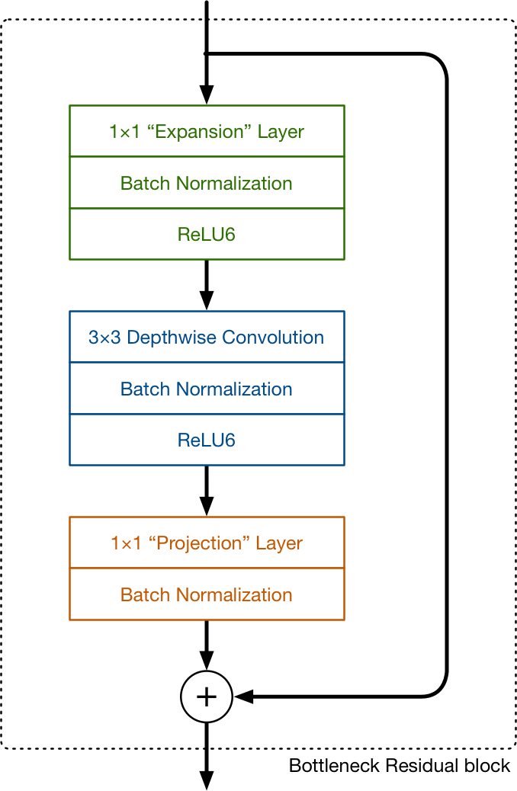

Detección de objetos
Objetivos
- Entender el funcionamiento básico de los extractores de características MobileNet y de los detectores de objetos SSD.
- Integrar un detector de objetos con funcionalidades de tracking en un entorno de monitorización IoT.
Código necesario
El código necesario para el desarrollo de la práctica puede obtenerse descargando el código de la URL.
Detección básica de objetos. Mobilenets y SSD
La detección de objetos es a día de hoy uno de los campos más importantes dentro de la visión por computador. Se trata de una extensión de la clasificación de imágenes, donde el objetivo es identificar una o más clases de objetos en una imagen y localizar su presencia mediante cajas (en adelante, bounding boxes) que la delimitan. La detección de objetos juega un papel fundamental en campos como la videovigilancia, por ejemplo.
Al igual que en los problemas de clasificación de objetos, algunas de las soluciones más eficientes para la detección de objetos se basan en dos fases:
- Fase de extracción de características, en base a una red neuronal genérica (por ejemplo, MobileNet).
- Fase de detección de objetos, en base a una segunda red neuronal específica (por ejemplo, SSD).
Extracción de características. Mobilenet v1
La idea principal tras MobileNet se basa en el uso intensivo de las llamadas depthwise separable convolutions, o DWCs, para construir redes neuronales profundas muy ligeras desde el punto de vista computacional.
Una capa de convolución convencional típica aplica un kernel de convolución (o "filtro") a cada uno de los canales de la imagen de entrada. Este kernel se desplaza a través de la imagen y en cada paso lleva a cabo una suma ponderada de los píxeles de entrada "cubiertos" por el kernel, para todos los canales de dicha imagen de entrada.
La idea a destacar aquí es que esta operación de convolución combina los valores de todos los canales de entrada. Si la imagen tiene 3 canales, la aplicación de un único kernel de convolución sobre la imagen resulta en una imagen de salida de un único canal:

En MobileNet v1 también se usa, aunque muy puntualmente, este tipo de convolución: únicamente en su primera capa. El resto de capas usan la llamada convolución depthwise separable (DWC). Realmente, esta es una combinación de dos operacioens de convolución: una depthwise y otra pointwise.
Una convolución depthwise opera de la siguiente manera:

Como puedes ver, no combina los canales de entrada, sino que realiza una convolución para cada canal de forma separada. Así, para una imagen de tres canales, crea una imagen de salida de 3 canales.
El objetivo de este tipo de convolución es filtrar los canales de entrada.
En MobileNet v1, la convolución depthwise siempre va seguida de una convolución pointwise. Una convolución pointwise es realmente una convolución "tradicional", pero con un kernel 1x1:

Como puedes observar, simplemente combina los canales de salida de una convolución depthwise para crear nuevas características.
Poniendo ambas cosas juntas (depthwise + pointwise), se consigue el mismo efecto que con una convolución tradicional, que realiza ambas operaciones en una sola pasada.
¿Por qué realizar esta separación? Desde el punto de vista computacional, una convolución tradicional realiza más operaciones aritméticas y necesita entrenar mayor cantidad de pesos (el artículo original de presentación de Mobilenet v1 cifra esta mejora en 9x para convoluciones 3x3).
Así, el bloque básico de MobileNet v1 sería:
Existen en total 13 de estos bloques, precedidos por una primera capa de convolución tradicional 3x3. No existen capas de pooling, pero algunas de las capas depthwise presentan un stride 2 para reducir la dimensionalidad; en estos casos, la correspondiente capa pointwise dobla el número de canales: si la imagen de entrada es 224x224x3, la salida de la red es 7x7x1024.
Mobilenet v1 usa una función de activación ReLU6 a la salida de cada bloque, que previene activaciones demasiado grandes:
y = min(max(0, x), 6)
Si trabajamos con un clasificador basado en MobileNet, todas estas capas desembocan en una capa de pooling average, seguida de una capa totalmente conectada (fully connected), y una capa final de clasificación softmax obteniendo un valor de probabilidad por clase.
Capas totalmente conectadas
A modo de recordatorio, recuerda que una capa totalmente conectada (FC, de fully connected) tomaría la siguiente forma:

La entrada a esta capa es un vector de números. Cada entrada está conectada a cada una de las salidas (de ahí su nombre). Estas conexiones poseen pesos asociados que determinan cuan importantes son. La salida es también un vector de números.
Cada capa transorma los datos. En el caso de FC, para cada elemento de salida, tomamos una suma ponderada de todos los elementos de entrada, añadiendo una desviación o bias:
in1*w1 + in2*w2 + in3*w3 + ... + in7*w7 + b1
En otras palabras, lo que calculamos es una función lineal sobre las entradas, en múltiples dimensiones. Además, aplicamos una función de activación a la suma ponderada:
out1 = f(in1*w1 + in2*w2 + in3*w3 + ... + in7*w7 + b1)
Representando los pesos en forma de matriz, y las entradas y desviaciones como vectores, podemos computar la salida de una capa FC como:
Observa que esto es en realidad un producto matriz-vector. Si el número de entradas crece por encima de 1 (es decir, tenemos un grupo o batch de entradas), esta operación se convierte en un producto de matrices, para la cual muchas arquitecturas, incluyendo nuestra Google Coral, están ampliamente optimizadas.
Observa también que la matriz de pesos es un producto del proceso de aprendizaje o entrenamiento, y que esta matriz puede contener miles (o millones) de elementos a entrenar en redes típicas.
Hiperparámetros
MobileNet fue diseñada no para ser una red neuronal concreta, sino una familia de redes neuronales, simplemente variando un conjunto de parámetros (llamados hiperparámetros). El más importante de estos hiperparámetros es el llamado depth multiplier; este hiperparámetro modifica la cantidad de canales por capa. Así, un valor de 0.5 reducirá a la mitad el número de canales usados en cada capa, reduciendo el número de operacioens en un factor 4 y el número de parámetros entrenables en un factor 3. Así, el modelo es más liviano, pero menos predciso.
Mobilenet v2
MobileNet v2, al igual que su versión anterior, utiliza DWCs, pero su bloque de trabajo principal se ha visto modificado:

En este caso, por cada bloque existen tres capas convolucionales. Las dos últimas son las ya conocidas: DWCs que filtran las entradas, seguidas por una capa pointwise 1x1. En este caso, sin embargo, esta última capa tiene otro cometido. En la versión 1 del modelo, la capa pointwise mantenía el número de canales o lo doblaba. En la versión 2, en cambio, su cometido es exclusivamente reducir el número de canales. Es por esto que, normalmente, a esta capa se le conoce como projection layer o capa de proyección: proyecta datos con un número elevado de dimensiones (canales) en un tensor con mucho menor número de dimensiones. Por ejemplo, esta capa podría trabajar con un tensor con 144 canales, reduciéndolo a sólo 24 canales. En ocasiones, a este tipo de capa se le conoce como "cuello de botella" (bottleneck"), ya que reduce la cantidad de datos que "fluyen" por la red.
En cuanto a la primera capa, también es una convolución 1x1. Su objetivo es expandir el número de canales antes de la DWC. Así, esta capa de expansión siempre presenta más canales de salida que de entrada, al contrario que en la capa de proyección. La cantidad exacta de expansión viene dada por el llamado factor de expansión, uno de los hiperparámetros (parámetros personalizables de la red) típicos en Mobilenet v2 (por defecto, el valor de este factor es 6):

Por ejemplo, si se proporciona un tensor de 24 canales a un bloque, la primera capa lo convierte a un nuevo tensor de 144 canales (por defecto), sobre el que se aplica la capa DWC. Finalmente, la capa de proyección proyecta estos canales a un número menor, véase 24 (por ejemplo). El resultado es que la entrada y salida a un bloque son tensores de dimensión reducida, mientras que el filtrado intermedio ocurre sobre un tensor de dimensionalidad alta.
Como puedes observar en la anterior imagen, otra novedad en Mobilenet v2 es la denominada residual connection, que conecta la entrada y la salida de un bloque (siempre que estos mantengan su dimensionalidad).
La arquitectura Mobilenet v2 consta de 17 de estos bloques conectados uno tras otro, seguidos de una única convolución estándar 1x1, y una capa de clasificación (si lo que se desea es utilizarla para tareas de clasificación).
Si observamos los datos que fluyen por la red, veremos como el número de canales se mantiene relativamente reducido:

Como es normal en este tipo de modelos, el número de canaes se incrementa a medida que avanzamos en la red (mientras la dimensión espacial disminuye). Sin embargo, en general, los tensores se mantienen relativamente pequeños, gracias a las capas bottleneck entre bloques (en la v1, los tensores llegan a ser hasta 7x7x1024, por ejemplo).
El uso de tensores de baja dimensionalidad es clave para reducir el número de operaciones aritméticas, y por tanto aumenta la adecuación de este tipo de modelos para trabajar sobre dispositivos móviles.
Sin embargo, trabajar sólo con tensores de baja dimensionalidad no permite, tras aplicar una capa de convolución sobre ellos, extraer demasiada información. Así, el filtrado debería trabajar sobre datos de alta dimensionalidad. Mobilenet v2, por tanto, une lo mejor de ambos mundos:

Detección de objetos. SSD (Single Shot Multi-Box Detector)
El framework SSD (Single Shot MultiBox Detector) es uno de los principales mecanismos para llevar a cabo tareas de detección de objetos. Tradicionalmente, estas tareas se realizaban con costosos métodos de ventana deslizante (detectando potenciales imágenes en múltiples ventanas de tamaños variables que se desplazaban por la imagen). Este enfoque de fuerza bruta fue mejorado por las llamadas R-CNN (Region-CNN), que se basaban en la extracción previa de Region Proposal (propuestas de regiones de la imagen en las que potencialmente podían existir objetos), para después extraer características de cada una de ellas a través de redes de convolución y realizar una tarea de clasificación de dichas características y extracción de las bounding boxes correspondientes. Las R-CNN adolecen de ciertos defectos que las hacen ineficientes (a día de hoy) en la vida real, véase:
- El proceso de entrenamiento de las redes es largo.
- El proceso de entrenamiento se desarrolla en múltiples etapas (por ejemplo, para proponer regiones o para clasificar).
- La red es lenta en la fase de inferencia.
En respuesta a esta ineficiencia, se han propuesto múltiples soluciones en los últimos años; las más populares son YOLO (You Only Look Once) y SSD MultiBox (Single Shot Detector).
SSD rebaja el coste computacional de las R-CNN sin necesidad de propuestas de regiones, operando en dos grandes fases:
- Extracción de mapas de características.
- Aplicación de filtros de convolución para detectar objetos.
La primera fase (extracción de características), se lleva a cabo mediante una red neuronal específica, llamada genéricamente backbone network. En el diseño inicial de SSD, esta red fue la red VGG16, aunque en esta práctica trabajarás con una implementación en la que se usa Mobilenet v1 y v2 (anteriormente descritas) para mejorar la eficiencia del proceso de detección.
El análisis del propio nombre proporciona información sobre las ventajas y modo de operación de SSD MultiBox:
- Single Shot: Las tareas de localización de objetos y clasificación se realizan en una única pasada (ejecución) de la red.
- MultiBox: Técnica de regresión para bounding boxes desarrollada por los autores.
- Detector: La red es un detector de objetos que además los clasifica.
Extracción de características
Por defecto, SSD utiliza la red neuronal de convolución VGG16 para extraer mapas de características. A continuación, detecta
objetos utilizando una de sus capas de convolución (concretamente, la capa Conv4_3). Suponiendo que esta capa es de dimension
espacial 8x8 (realmente, es 38x38), para cada celda, se realizan 4 predicciones de objeto:
Cada predicción está compuesta por una boundary box y una puntuación o score para cada clase disponible (más una clase extra
si no se detecta objeto); para cada objeto detectado, se escoge la clase con mayor puntuación. Así, la capa de convolución Conv4_3
realiza realmente 38x38x4 predicciones:

Predictores convolucionales
SSD utiliza pequeños filtros de convolución de dimensión 3x3 para predecir la localización y puntuación asociada a cada objeto a detectar. Así por ejemplo, en un escenario con 20 clases, cada filtro de convolución devolverá 25 canales: 21 para cada clase más la información asociada a una bounding box:

Mapas de características multi-escala
Aunque se ha descrito el trabajo de SSD con una única capa de la red neuronal de extracción de características, realmente SSD utiliza múltiples capas para detectar objetos de forma independiente. SSD usa las capas de menor resolución para detectar objetos de mayor tamaño, y las capas de mayor resolución para detectar objetos de menor tamaño. Por ejemplo, los mapas de características de dimensión 4x4 se usarían para detectar objetos mayores que aquellos de dimensión 8x8:

Predicción de bounding boxes
Como en cualquier otra red neuronal de convolución, la predicción de bounding boxes comienza con predicciones aleatorias que se refinan durante la fase de entrenamiento vía descenso de gradiente. Sin embargo, estos valores iniciales pueden ser conflictivos si no son suficientemente diversos desde el comienzo, principalmente en imágenes con distintos tipos de objetos:

Si las predicciones iniciales cubren más variedad de formas, el modelo podrá detectar más objetos:
En la vida real, las boundary boxes no presentan formas y tamaños arbitrarios, sino que, por ejemplo, presentan dimensiones o proporciones similares que pueden ser tomadas como base para el entrenamiento del modelo SSD. Normalmente, para un determinado objeto y conjunto de entrenamiento, se consideran todas las bounding boxes en el conjunto, y se toma como representativa el centroide del cluster que representaría a todas ellas.
Así, para cada mapa de características extraídas por la red backbone, se utiliza un conjunto único de bounding boxes por defecto centradas en la celda correspondiente, por ejemplo:
Estimación de similitud
Las predicciones de SSD se clasifican como positivas o negativas. Esta evaluación se basa en la métrica IoU (Intersection over Union):

Realmente, las estimaciones iniciales de bounding boxes se escogen para que presenten un valor de IoU mayor a 0.5. Esta es una mala predicción todavía, pero una buena base para comenzar con el proceso de regresión (refinamiento) hacia las bounding boxes definitivas.
Data augmentation
Para mejorar la precisión del modelo, se utiliza la técnica de aumento de datos o data augmentation. El objetivo de esta técnica es exponer nuevas "variantes" de la imagen original para enriquecer la información almacenada. Estas transformaciones incluyen recortes (cropping), modificación de orientación (flipping) y distorsiones de color. Por ejemplo:

Conjuntos de entrenamiento
Es necesario un conjuno de entrenamiento y test etiquetado y con bounding boxes reales (en el artículo descriptivo de SSD, se les conoce como ground truth), con una etiqueta por bounding box. Por ejemplo:

Detección de objetos en TFLite
En este laboratorio, utilizaremos el código proporcionado como base para desarrollar una aplicación de monitorización de aforo en un recinto (por ejemplo, en un aula).
En primer lugar, desempaqueta el fichero proporcionado e instala los requisitos necesarios. En primer lugar, descarga los modelos que utilizarás
para realizar la inferencia, ejecutando el script download_models.sh. Además, descarga también los modelos para Mobilenet SSD disponibles en
la web de Google Coral (concretamente, los modelos MobileNet SSD v1 y v2 (COCO)).
A continuación, en el directorio gstreamer, ejecuta el script install_requirements.sh para instalar los requisitos necesarios para el desarrollo
del laboratorio.
Si todo ha ido bien, podrás ejecutar el código, que es totalmente funcional, mediante la orden:
python3 tracking.py
Observa que la salida, en forma de ventana de vídeo, mostrará una bounding box y clase asociada para cada objeto detectado en la escena. Por defecto, el modelo que se toma es Mobilenet v2 SSD.
Desde el punto de vista del código, la estructura es muy similar a la vista para la clasificación de objetos. Observa que, se realiza la inferencia mediante la invocación a detect_objects y se analizan los resultados obtenidos (objetos detectados) en tracker_annotate dibujando las cajas en draw_objects_tracked.
Tarea
Temporiza el tiempo de respuesta (inferencia) para la red por defecto y para cada una de las dos redes descargadas desde la página de modelos de Google Coral.
Tarea
Modifica el código para mostrar por pantalla (por la terminal) el número de objetos detectado en cada frame en la variable tracks, así como la posición y clase a la que pertenecen. Intenta determinar qué significa cada uno de los campos asociados a cada box y cómo estos valores varían al mover un objeto por la pantalla, tal y como hace la función logger.debug(f'trackes: {tracks}')`
Tracking de objetos en TFLite
El código proporcionado integra un tracker o seguidor de objetos, que no solo detecta objetos en un fotograma determinado, sino que los identifica y sigue mientras aparezcan en pantalla. Esta implementación está basada en el motpy (enlace).
Para instalar el tracker es necesario instalar el paquete motpy:
pip3 install motpy
Observa que, al ejecutar el script, se asocia no sólo un bounding box y clase a cada objeto, sino también un identificador que (idealmente), debería mantenerse mientras el objeto siga en la imagen.
El tracker Sort devuelve, en su función update, un array Numpy en el que cada fila contiene un bounding box válido, y un identificador de objeto único en su última columna.
Tarea
Modifica el código para que se muestre para cada fotograma los bounding boxes e identificadores únicos asociados a cada objeto.
Tarea entregable (80% de la nota)
Se pide modificar el script inicial para que, periódicamente, se realice un conteo del número de personas detectadas en una determinada escena. Este valor (número de personas) será exportado a un panel de control (bajo tu elección) utilizando algún protocolo de entre los vistos en la asignatura RPI-II (por ejemplo, MQTT). El protocolo y el panel de control a utilizar queda bajo elección del alumno/a. Se establecerá un umbral de alarma en forma de aforo máximo autorizado, al cual se reaccionará enviando una señal de aviso al usuario desde el panel de control. Toda la infraestructura necesaria se puede implementar en la Raspberry Pi o en un servicio externo, pero en cualquier caso, la inferencia se realizará siempre en la Raspberry Pi, y se acelerará mediante el uso del dispositivo Google Coral. Ejemplos relacionados sobre el uso de MQTT para la creación de un "publicador" en python pueden encontrarse en los ejemplos de la implementación de MQTT Paho
Tarea entregable (20% de la nota)
Haciendo uso de las capacidades de tracking del script original, se pide diseñar e implementar una solución para monitorizar el paso de personas en sentido entrada y salida en una entrada a un recinto. Así, se supondrá una cámara situada de forma perpendicular a la entrada al recinto, de modo que las personas que accedan al mismo ingresarán en la escena por uno de los extremos y saldrán por el opuesto. Las personas que salgan del recinto discurrirán por la imagen en sentido contrario. Se pide que el sistema almacene el número de personas que han entrado y salido del recinto, así como el momento en el que lo han hecho.